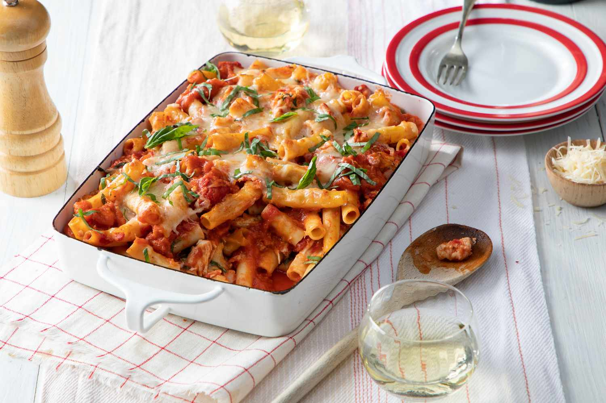

Baked Ziti

Description
This baked ziti is a MAJOR crowd-pleaser, whether I’m hosting a family gathering or cooking for my son’s college friends (I usually double the recipe in that case!). In fact, I love it so much that it’s featured proudly on the cover of my second cookbook! The secret to its uniqueness lies in using Italian sausage, which is a shortcut to incredible flavor, and skipping the ricotta cheese, which tends to have a grainy texture in traditional baked ziti. The recipe is doable on a weeknight yet special enough to serve to company, and it’s also a fantastic make-ahead potluck dish.
If you’re looking to save time, you can opt for pre-shredded mozzarella cheese from a bag; just make sure it’s the whole milk version (the low-fat version isn’t nearly as good). As the baked ziti works its magic in the oven, throw together a big Italian salad and warm some garlic bread, and you’re ready to feast!
Ingredients
- Ziti Noodles
- Italian Sausage
- Garlic
- Canned Crushed Tomatoes
- Salt, Sugar, Red Pepper Flakes
- Heavy Cream
- Pecorino Romano
- Fresh Basil
- Mozzarella Cheese
Steps
- Bring a large pot of salted water to a boil. Add the 1 lb of ziti noodles and cook according to the package directions for very al dente, about 7 minutes. (It will continue to cook in the oven so you want to undercook it just a bit.) Drain and add the pasta back to the pot. Set aside.
- Preheat the oven to 425°F and set the oven rack in the middle position.
- Heat a large sauté pan (preferably nonstick) over medium-high heat. Crumble the 1½ lbs of sausage into the pan and cook, breaking apart with a wooden spoon, until lightly browned and just cooked through, 5 to 6 minutes. Use a slotted spoon to transfer the cooked sausage to a plate. Drain all but 1 tablespoon of the fat from the pan and set over low heat (if you don't have enough fat in the pan, add a tablespoon of olive oil). Add the 4 cloves of minced garlic and cook, stirring constantly with a wooden spoon, until soft but not browned, about 1 minute. Add the 28-oz can of crushed tomatoes, 1 teaspoon salt, 1½ teaspoons sugar and ¼ teaspoon red pepper flakes and simmer, uncovered, for 10 minutes.
- Add the 1 cup cream, ⅓ cup of the pecorino Romano, cooked sausage, and ⅓ cup basil to the pan; stir until evenly combined. Carefully pour the contents of the sauté pan into the large pot with the pasta and gently stir to combine. Spoon half of the mixture into a 9 x 13-inch baking dish. Sprinkle with half of the shredded mozzarella (1 cup) and half the remaining pecorino Romano (1½ tablespoons). Spoon the remaining pasta mixture on top and sprinkle with the remaining mozzarella (1 cup) and pecorino Romano (1½ tablespoons). Transfer to the oven and bake, uncovered, until the cheese has melted and browned, 15 to 20 minutes. Sprinkle with more basil and serve.